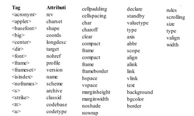

L'HTML5 è un linguaggio di markup per la strutturazione delle pagine web, pubblicato come W3C Reccomendation da ottobre 2014
Lo sviluppo venne avviato dal gruppo di lavoro Web Hypertext Application Technology Working Group (WHATWG) (fondato del 2004 da sviluppatori appartenenti ad Apple, Mozilla Foundation ed Opera Software) che si pose come obiettivo quello di progettare delle specifiche per lo sviluppo di applicazioni web, focalizzandosi su miglioramenti e aggiunte ad HTML e alle tecnologie correlate
Inizialmente in contrasto con World Wide Web Consortium per le lungaggini nel processo di evoluzione dello standard html e per la decisione del W3C di orientare la standardizzazione verso l'XHTML 2 che non garantiva retro compatibilità, lo stesso W3C ha poi riconosciuto valide tali motivazioni, annunciando di creare un apposito gruppo per la standardizzazione dell'HTML5 e abbandonare l'XHTML 2.0
Dal 2007 il WHATWG ha collaborato con il W3C in tale processo di standardizzazione, per poi decidere nel 2012 di separarsi dal processo di standardizzazione del W3C, creando di fatto due vesioni dell'HTML5: la versione del WHATWG viene definita come "HTML Living Standard" e quindi in continua evoluzione, mentre quella del W3C sarà l'unica versione corrispondente ad uno "snapshot" del Living Standard.
La prima Candidate Recommendation è stata pubblicata dal W3C il 17 dicembre 2012, e la prima versione dello standard è stata pubblicata come Recommendation il 28 ottobre 2014.
La versione HTML 5.1 è stata pubblicata dal W3C come Recommendation il 1° novembre 2016.
La versione HTML 5.2 è stata pubblicata dal W3C come Recommendation il 14 dicembre 2017.
La versione HTML 5.3 è stata pubblicata dal W3C come Recommendation il 28 gennaio 2021.
HTML5 ha deprecato i seguenti tag e attributi presenti in HTML4 poiché la loro funzione è ora gestita dai CSS3
HTML5 e CSS3 (l'evoluzione di CSS2) costituiscono un linguaggio turing completo, condizione sufficiente per un linguaggio per essere consideratp un linguaggio di programmazione.